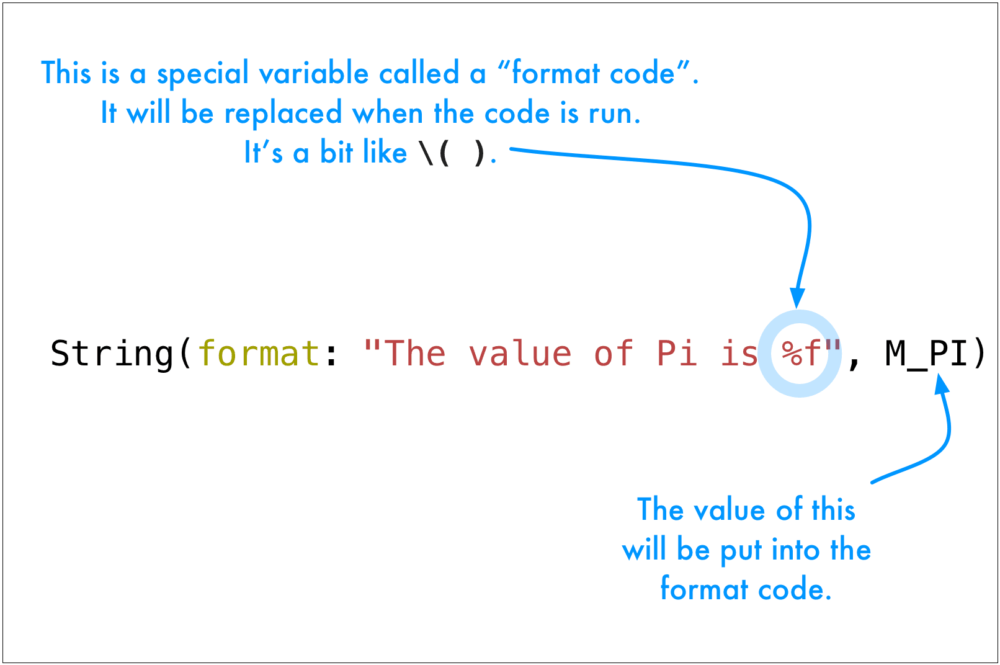

There it is, in all its 14-decimal-place glory.
The value of Pi is 3.14159265358979
What if we want to display it like this, with only a few decimal places? And let's round to the nearest value we're showing.
The value of Pi is 3.142
String interpolation does not help us here. We need to use string formatting instead. How to do this can be quite different in different languages. Here's how Swift does it. We'll start with an example.
1 2 | let formattedString = String(format: "The value of Pi is %f", M_PI)
println(formattedString)
|

The different between %f and \( ) is that a format code can be configured to display how we want it to. Also, there are different codes for different data types. Here are some common ones.
| Code | Type |
|---|---|
%d |
Int |
%f |
Float |
%s |
String |
%u |
unsigned |
%c |
char |
To see more of them open a browser window and search the internet for "printf format codes". The printf is from C and so are the format codes. This search will result in lots of sites with more information.
Another great feature of format codes is being able to specify how things are formatted. In our example with Pi we just need to do this.
1 2 | let formattedString = String(format: "The value of Pi is %.3f", M_PI)
println(formattedString)
|
Try it!